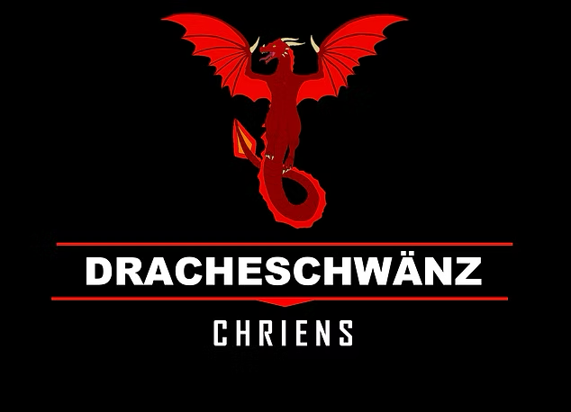
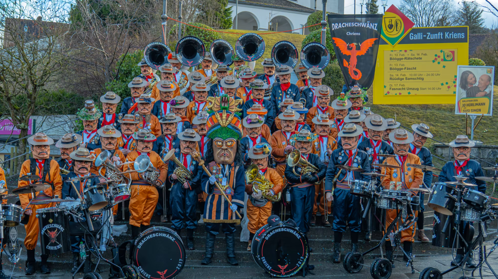

2017
Gruendung im Kuonimatt Quartier und Start einer jungen Guggenmusik.


Ueber uns
Unsere Geschichte
Die Dracheschwänz wurden 2017 gegründet. Was klein angefangen hat, ist zu einer aktiven Guggenmusik mit 55 Mitgliedern geworden. Neben Musik gehoeren Bastelarbeit, gemeinsame Erlebnisse und die Vorbereitung auf die Fasnacht zu unserem Vereinsleben.
Diese Seite verbindet die offizielle Vereinsgeschichte mit dem Ziel aus deinem Konzept: Besucherinnen und Besucher sollen schnell spueren, dass hier Gemeinschaft hinter dem Sound steht.
Gruendung im Kuonimatt Quartier und Start einer jungen Guggenmusik.
Erste gemeinsame Auftritte, Grende, Proben und Fasnachtserlebnisse.
Mit dem Sujet "Trank der Goetter" aktiv in Kriens, Horw und Luzern unterwegs.
Chriens, regional verbunden und an der Fasnacht in Kriens, Horw und Luzern praesent.
Jung, engagiert, kreativ, laut, offen fuer neue Mitglieder und fasnachtsbegeistert.